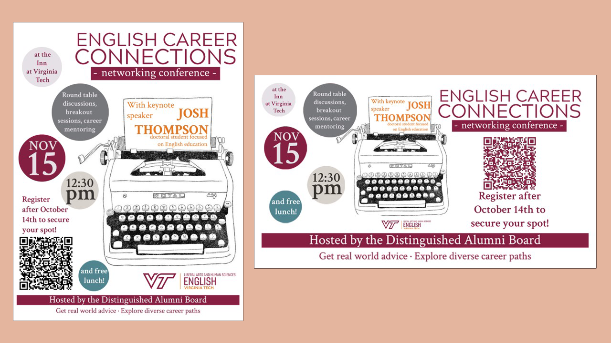
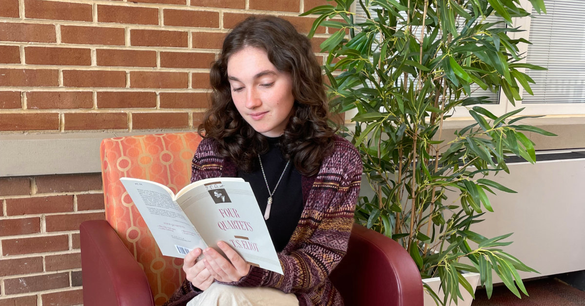

Words & Pictures Portfolio
English Career Connections Flyer Design
English Career Connections

Study Tip
Instagram Takeover

Why English
Ellie Colonna
Instagram:
Meet Ellie Colonna! As an English Lit major with a minor in Women’s and Gender Studies, Ellie believes everyone’s story deserves to be heard When we asked her #WhyVTEnglish, she said, “Every day, we are presented with many stories, each possessing its own unique perspective, and I want to help share them.” We’re proud to have her as part of the Virginia Tech English community!
Follow her on [this date] as she shares a day in her life, featuring [this event]! Just another reason to love #VTEnglish
Post by Chloe Ziegler
Facebook:
“Every day, we are presented with many stories, each possessing its own unique perspective.”
Everyone has a good story. Meet Ellie Colonna, a proud English Literature major with a firm commitment to inclusivity and storytelling. Minoring in women and gender studies, Ellie is passionate about advocating for individuals. Her drive to explore these diverse narratives fuels her dedication to the English department. Ellie believes that by studying literature, she can better understand the world and contribute to the diverse voices that shape our collective experience.
On [this date], Ellie will share behind-the-scenes of a day in her life, featuring [this event]! Stay excited for upcoming #VTEnglish events!
Post by Chloe Ziegler
X/Threads:
Meet Ellie Colonna! Passionate about advocacy and storytelling, she is a proud English Literature major with a minor in womens and gender studies. She believes that everyone has a story worth telling, and she’s dedicated to amplifying those voices #WhyVTEnglish 🧡
Bridging the gap: How Kate Stanko found her place in technical writing
Discover how Kate Stanko, a senior at Virginia Tech, found her calling in technical writing through her internship with Virginia Tech’s Division of Information Technology, where she bridges the gap between complex technology and everyday users.

Stepping into the world of technology can be daunting, especially for a liberal arts student at a school known for its engineering prowess. For Kate Stanko, a senior at Virginia Tech double majoring in communications and professional and technical writing, an internship with Network Infrastructure and Services (NI&S) opened the door to a rewarding career path that balances her passion for technical writing with the challenge of making complex information accessible to a wider audience.
“I love being the person who bridges the gap between technology and the general public,” Stanko said. For her, becoming intern with the Division of Information Technology at Virginia Tech was the perfect opportunity to establish connections in the technical world and contribute to something bigger. Her role, as she describes it, involves taking complex, technical material and transforming it into content that anyone can understand—a responsibility she embraces wholeheartedly.
A day in the life of a technical writer
On a typical day, Stanko navigates through articles, documentation, and style guides, ensuring that everything adheres to the unit’s standards. Her role is primarily remote, and her work remains seamless thanks to tools like Outlook, Slack, and Google Drive. With the flexibility of remote work, Kate can work on her projects from anywhere, even at the campus radio station where she holds the title of General Manager.
“There’s a lot of coordination,” she said, “and I love that about this role. You have to balance detail orientation with broader communication goals.”
One of her biggest tasks has been working on Virginia Tech’s migration to Zoom phones. As a technical writer, she was responsible for drafting the communications and user instructions for this shift, ensuring that all the information was clear, concise, and usable by both technical staff and end users.
Her work on Zoom phone migration isn’t her only project. She has also helped develop instructions for VT OpenWiFi, collaborating closely with directors and other technical staff to make sure the final product met everyone’s needs.
“It’s a lot of back and forth, but at the end of the day, it’s rewarding to know I’ve made something that’s going to help so many people,” she said.
Collaborating with the experts
When she collaborates with the technical staff, Kate shares how invaluable their input has been in her writing.
“You don’t need to be an expert in IT to communicate the issues clearly,” she said. She believes her lack of technical experience actually empowers her to simplify complex ideas, making them more accessible to users who may be unfamiliar with the technology.
“The most challenging part of the job is standardizing content,” she added. “There are so many departments within IT, and they each have their own way of doing things. Everyone has different expectations, so it’s about finding that balance and creating a uniform approach.” This was particularly evident when she worked on documentation for the OpenWiFi project, where maintaining consistency across different departments was crucial.
Skills and takeaways from the internship
Stanko’s time with the unit has not only broadened her understanding of information technology but also sharpened her technical writing skills.
“Experiential Learning opportunities, such as those with the Bridge Program, show students the connection between classroom knowledge and workplace skills. Hands-on learning experiences like her internship allow students to not only meet graduation requirements but also gain experience in their chosen fields,” said Dawn Knight, Advisor in the Department of English.
“Following a style guide is so important,” Kate said. “It’s not just about learning it but also reinforcing it with others. I’ve definitely improved my attention to detail.”
An essential part of her role has been tracking changes across a large body of work—whether it’s updating old documentation or making sure that new instructions are consistent with past material.
“I might be handed a big spreadsheet, and I have to track every mention of a particular tool or term to ensure it’s all aligned,” she said.
Advice for future interns
For students thinking about applying to an internship in her unit, her advice is simple: don’t be afraid.
“It can be intimidating, especially as a liberal arts student going into a technical field,” she said “but there’s so much value in that unique perspective.”
She said how rewarding it is to feel valued in a traditionally tech-heavy environment like Virginia Tech.
“It’s empowering,” Stanko said. “I’ve learned so much, and it’s great knowing I’ve contributed to making things easier for others.”
Description:
Instagram post:
How do you make tech accessible? For Virginia Tech senior Kate Stanko, it’s all about clear communication. Read about her journey in technical writing with NI&S.
Facebook post:
From bridging the gap between tech and the general public to creating clear documentation for VT’s OpenWiFi and Zoom phone migration, Virginia Tech senior Kate Stanko is making an impact as a technical writer with NI&S. Read more about her experience and the skills she’s gained.
Twitter:
Bridging the gap between complex tech and the general public! VT senior Kate Stanko shares her experience as a technical writing intern with NI&S. Read more about how she’s making an impact.
Captions for Images:
Hokie Bird one: Kate Stanko pictured with our beloved Hokie Bird! Photo taken by WUVT multimedia director Ben Janusz.
Sitting in station: Kate Stanko is the general manager for our on-campus radio station, WUVT! Her position at NI&S allows her to work from anywhere, even the station! Photo taken by Words & Pictures correspondent, Chloe Ziegler.
Graduate Class Photography

Instagram:
A snapshot of creativity in motion during Professor Sophia Terazawa's Form & Theory of Poetry class. Students dive deep into poetic structure, discovering the crossroads between mathematics and poetry, and challenging the boundaries of form and language. #MFA #CreativeWriting #Hokies
Facebook:
In Professor Sophia Terazawa's Form & Theory of Poetry class, Virginia Tech MFA students are exploring the art of poetry through deep discussions and collaboration. This is where the next generation of writers sharpen their craft. #MFA #VTEnglish #HokiePride
Twitter:
Professor Sophia Terazawa’s Form & Theory of Poetry class pushes MFA students to think critically about structure and language, shaping their poetic voices. #MFA #PoetryInMotion #VTFaculty